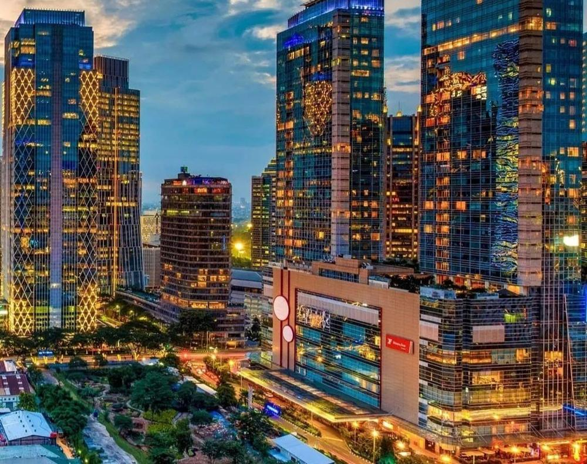
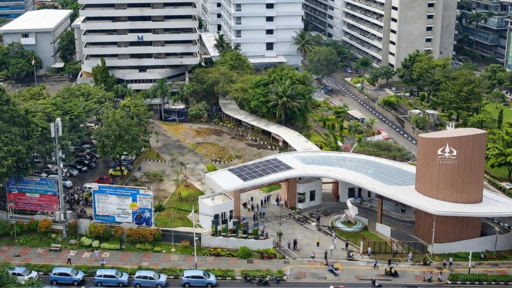
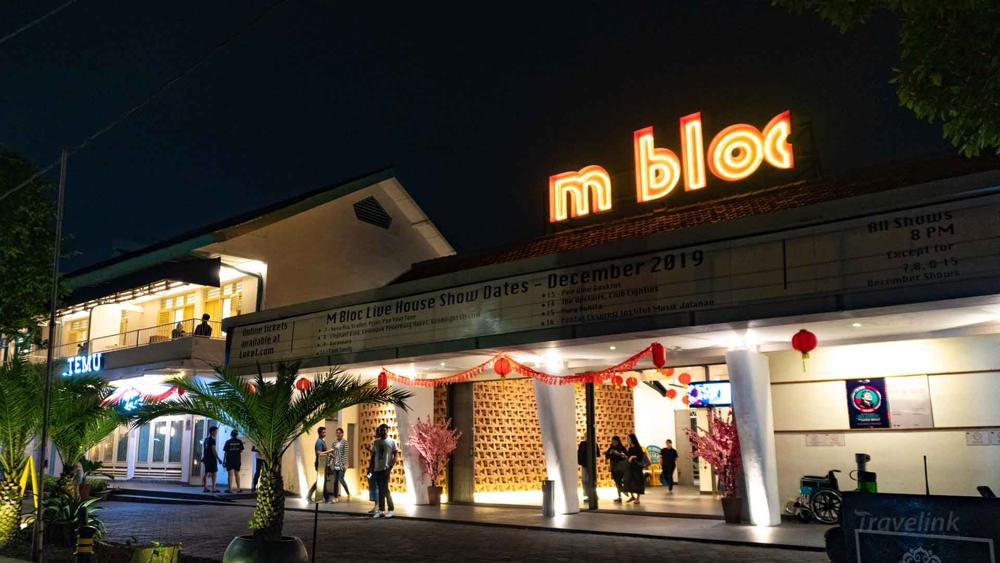
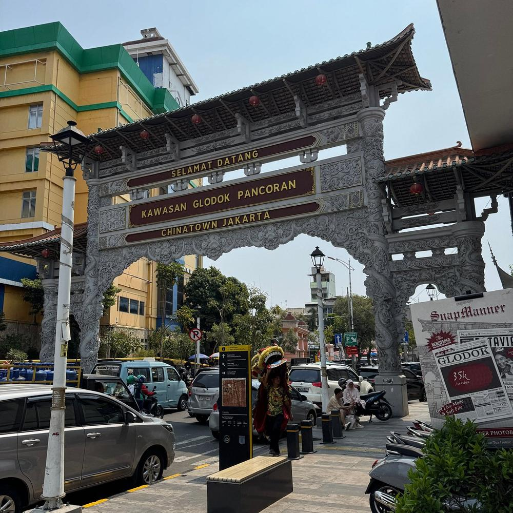
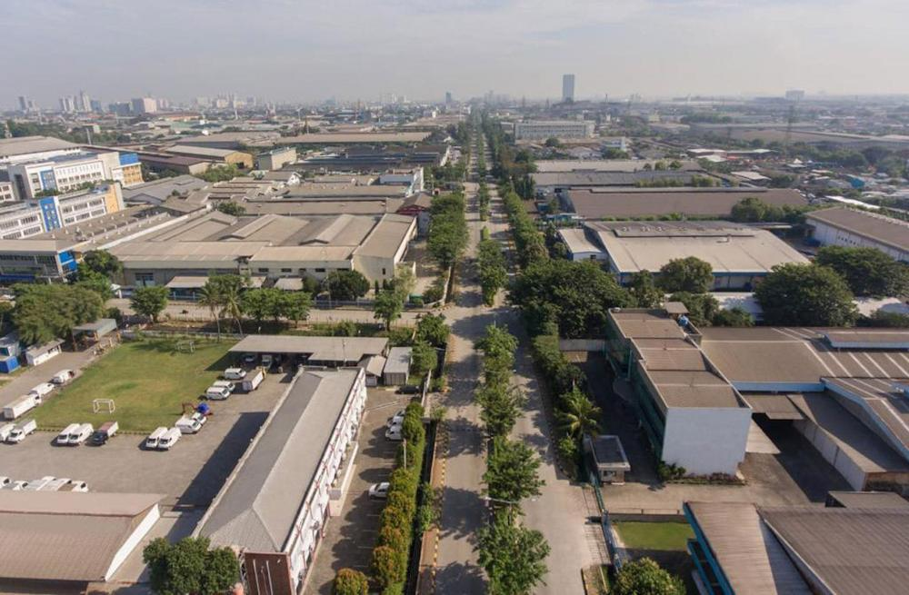

Satu peta, tiga mode. Pilih langkah di kiri untuk melihat masing-masing cara kerjanya — semua membaca lapisan yang sama dari GeoServer.
Gulir, dan kamera menukik dari distrik ke distrik mengikuti alur naratif.
Semua landmark sebagai grid foto; klik untuk memperbesar.
Pan & zoom bebas, nyalakan atau matikan lapisan sesukamu.




